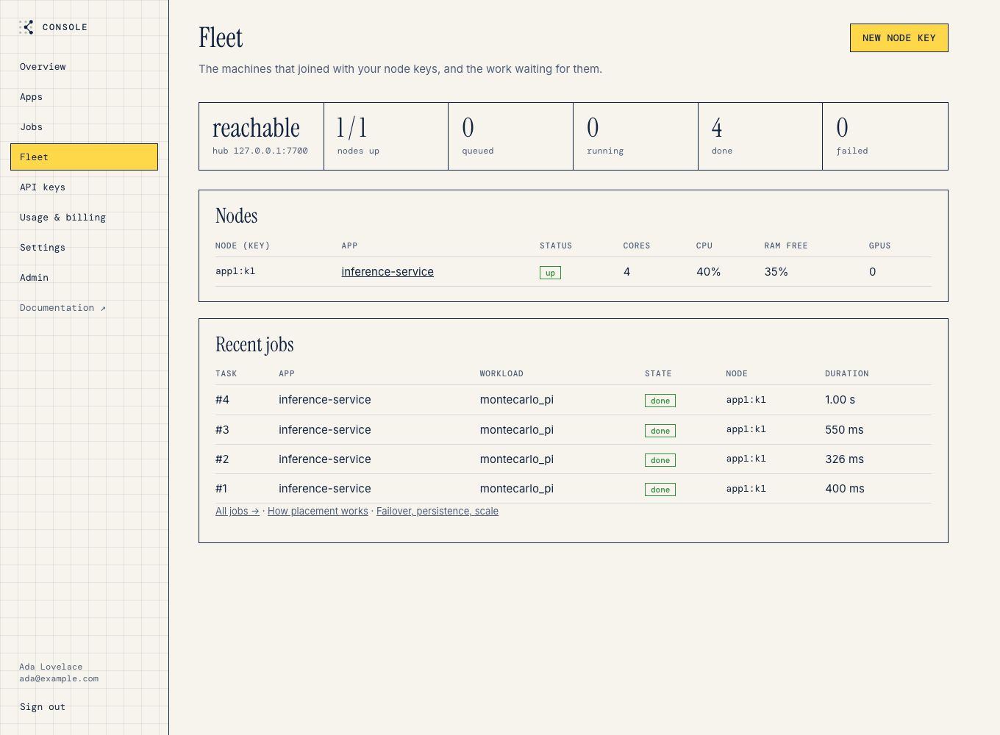

Console and accounts
Sign up, create apps linked to the infrastructure, get API keys, send jobs, watch usage, pay for what you use.
The five steps
- Create an account (e-mail and password). A free monthly allowance is included.
- Create an app from the Overview. An app is a project: its own tenant id on the fleet, its own keys, usage and optional monthly budget.
- Create an API key: a client key sends work and reads results; a node key lets a machine join the fleet. The key is shown once.
- Connect a machine:
spatial agent --hub HUB --token-file node.tok. It appears in Fleet within seconds. - Run a job from Jobs (or
spatial fleet submitwith a client key). Usage is metered per finished task and billed monthly.
The Overview shows these steps as a checklist and ticks them from what really exists on the hub.
The console, page by page
| Page | What it is for |
|---|---|
| Overview | The checklist, apps, active keys, nodes up, tasks and compute this month, estimated charge |
| Apps | One page per app with tabs: Overview (usage chart, recent tasks), Keys, Connect (CLI and Python snippets with your hub address), Jobs, Settings (name, budget, delete) |
| Jobs | Submit one of the hub's allow-listed workloads with its parameters, follow queued, running and finished jobs |
| Fleet | The machines that joined with your node keys (status, cores, CPU, RAM), queue counts, how to add a machine |
| API keys | Every hub credential of your apps; create, copy once, revoke |
| Usage & billing | This month by app, free allowance, price per compute hour, invoices, payment |
| Settings | Profile, Security (password, active sessions), Account tokens for the REST API, Activity, Data (export, delete account) |
| Admin | First account only: users, platform totals, hub status, configuration |



API keys and account tokens: two different things
| API key | Account token | |
|---|---|---|
| Used with | The hub (SWP/2): spatial agent, spatial fleet, any client | The console REST API (reference): scripts that create apps, keys, read usage |
| Looks like | spc1.…~… (a scoped hub credential named app7:k3) | spt_… |
| Scopes | client: fleet:submit, fleet:read. node: fleet:report, fleet:work | read (GET only) or write |
| Shown | Once, at creation; only the last 4 characters are kept | Once; only a hash is kept |
| Revocation | At once, on the running hub (a revoked-names file it re-reads) | At once |
How it is wired to the infrastructure
| In the console | On the hub |
|---|---|
| An app | The tenant app7: fair share, queue and quotas apply to it |
| A key | A credential app7:k3 signed with the hub's master key |
| A machine in Fleet | A node whose identity is its node key |
| A job | A task submitted with a short-lived client credential of the app |
| Usage | One line per finished task in the hub's usage file, read incrementally |
Security
- Passwords hashed with scrypt; the same message and the same work for unknown and known accounts; five wrong passwords lock the account for 15 minutes; sign-ups, logins and resets are rate-limited.
- Session cookie
HttpOnly,SameSite=Strict(Securebehind TLS), CSRF token and same-origin check on every change. Tokens are bearer credentials without cookies, so no CSRF; a token cannot create tokens, change the password or delete the account. - Reset links are single-use and expire in an hour and never reveal whether an address has an account; changing the password signs out every other session; you can list and end sessions.
- One user cannot see or change another's app (same answer as for an app that does not exist). Strict content security policy: no inline script or style.
- Binds to 127.0.0.1 unless you explicitly allow remote access: put TLS in front (the compose file uses Caddy).
Billing
Price per compute hour and the monthly free allowance are configuration (--pricing-file); the defaults are an example price list. Invoices are created when a month with usage ends; tiny amounts are waived. Payment goes through Stripe Checkout when STRIPE_SECRET_KEY is set, and an invoice is marked paid only by Stripe's signed webhook. Without Stripe the console shows invoices and refuses to charge.
Run and deploy
Locally: spatial platform serve (see the panel). On a server: docker compose --env-file deploy/.env up -d --build starts the hub, the console and automatic HTTPS (docs/DEPLOY.md).